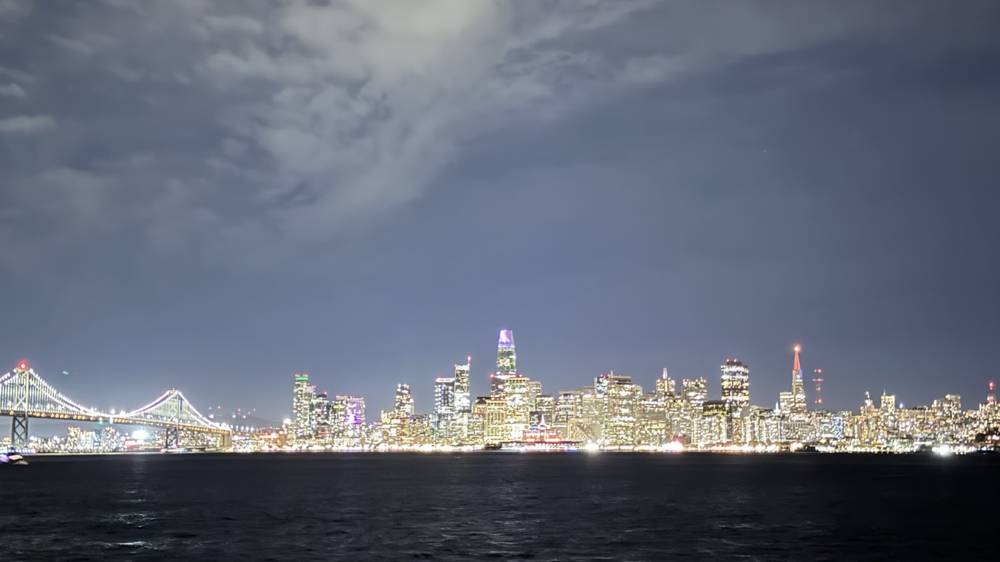
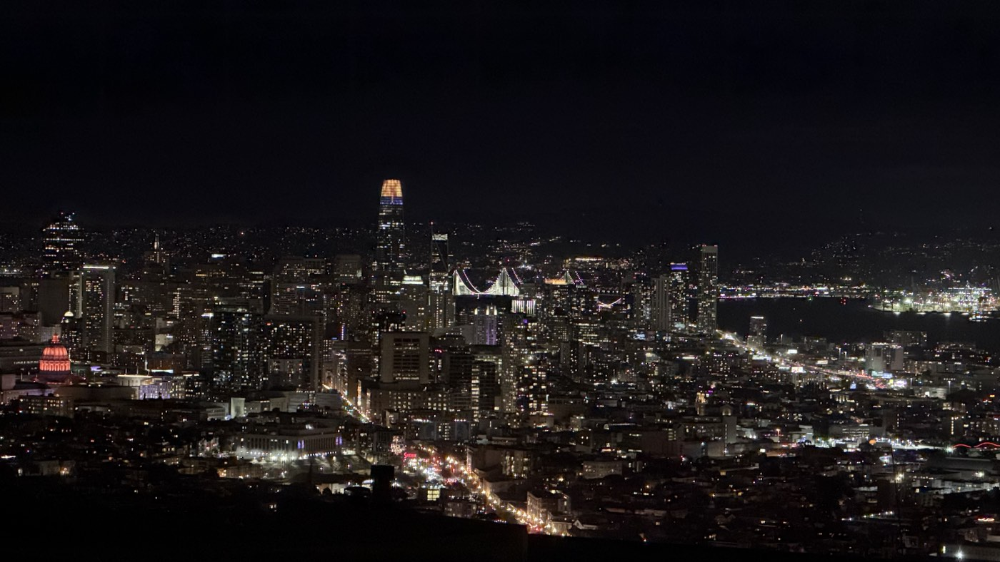
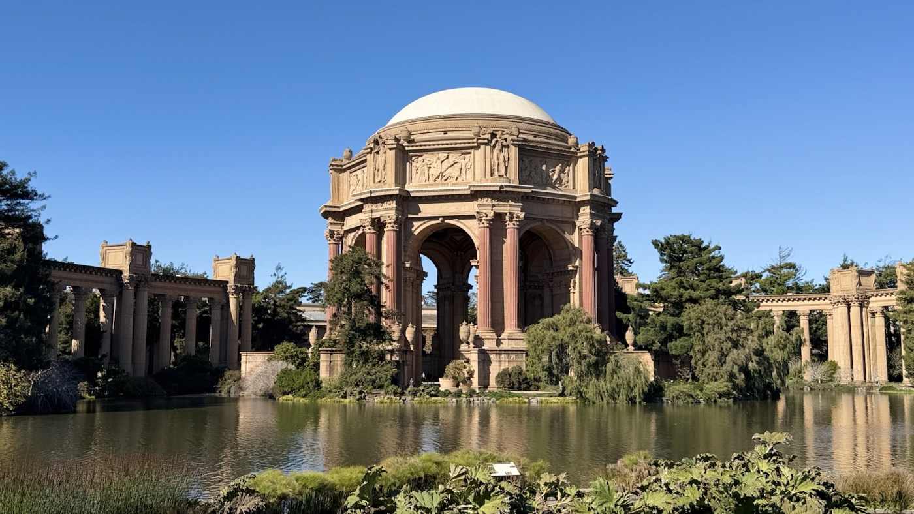
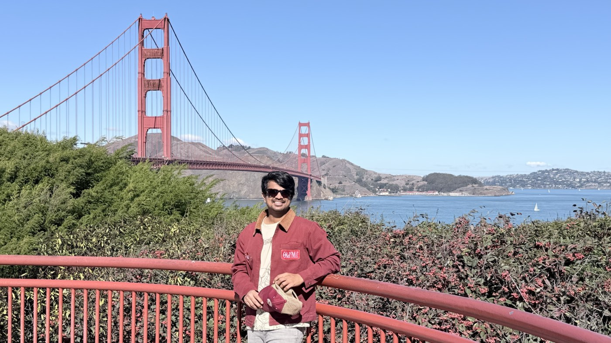
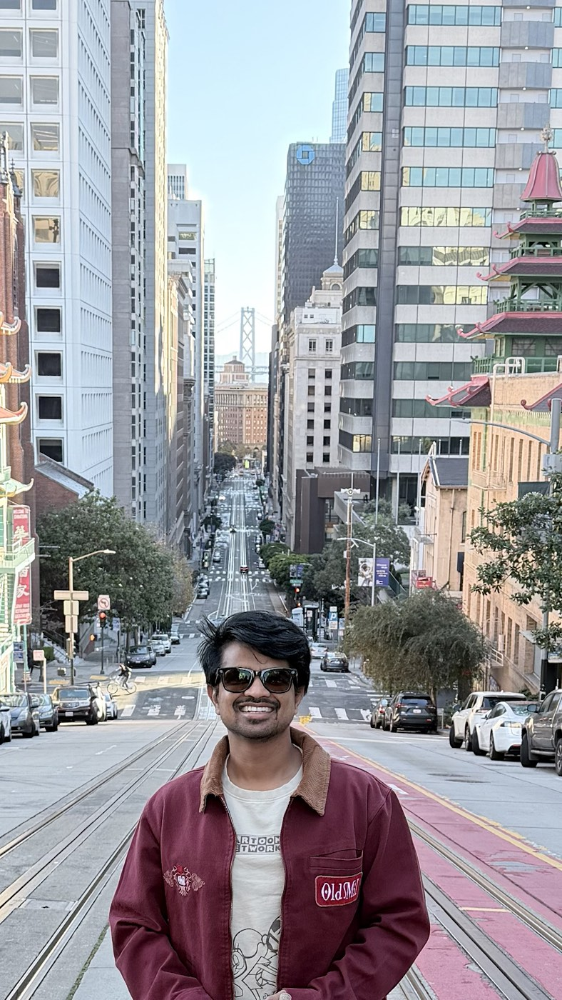
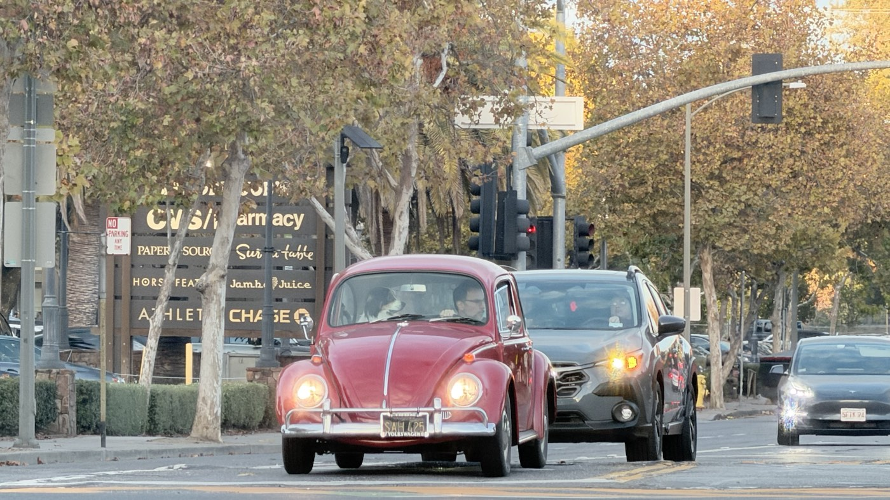
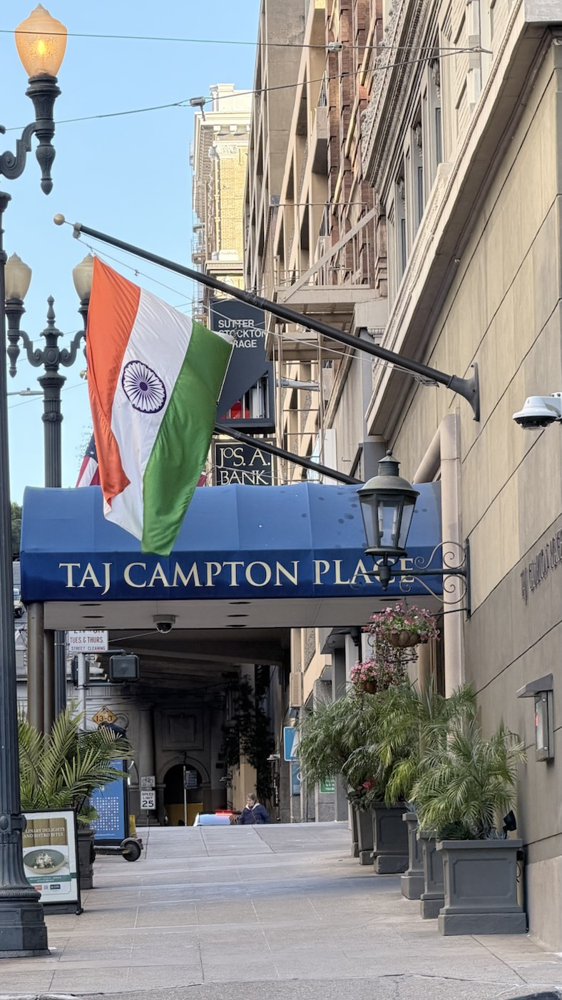
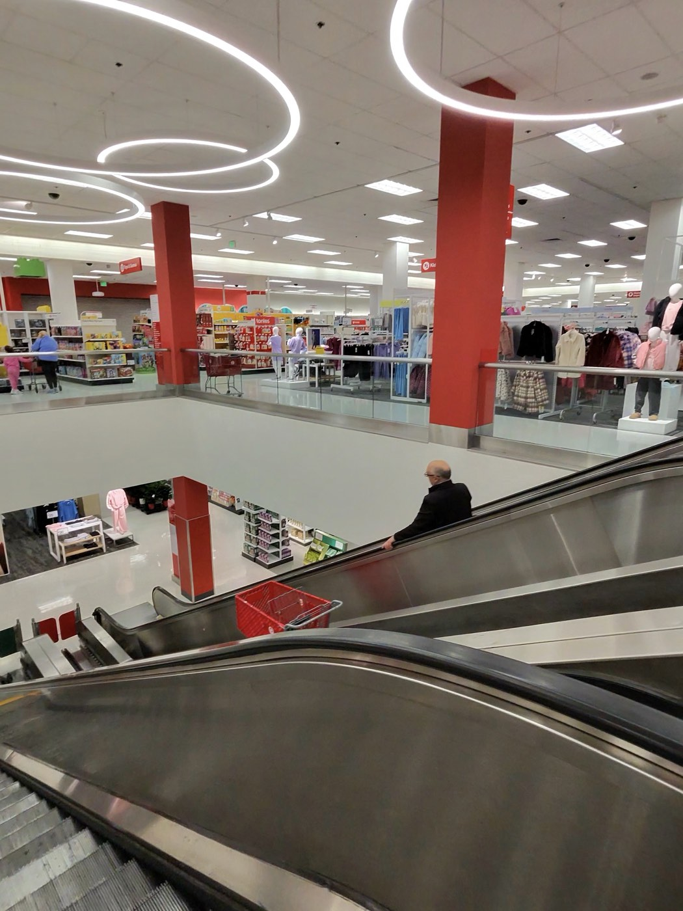
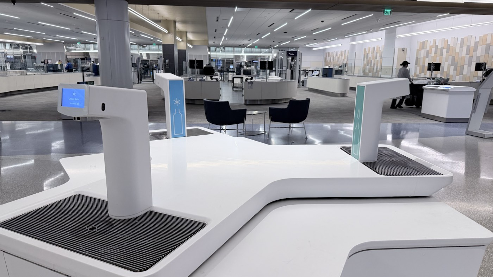

I came to San Francisco with technology on my mind. Waymo, Google, OpenAI, Cloudflare, Databricks and the energy around building new things were a major part of the trip. I wrote about that side of the experience in San Francisco Made the Future Feel Close.
But a city is much more than the companies associated with it.
From the moment I entered the Bay Area, San Francisco began making an impression through its coastline, hills, architecture, engineering, people and small details of daily life. Some moments were famous postcard views. Others were ordinary conveniences that made me stop and think, “Someone designed this carefully.” Together, they created an experience that felt beautiful, inventive and surprisingly welcoming.
San Francisco impressed me at every scale—from a bridge across the bay to a water dispenser just beyond airport security.
The city introduced itself through water and light
The natural setting was the first thing I noticed. Water is never far from the identity of San Francisco. The coastline, changing light and views across the bay give the city an openness that softens its dense streets and dramatic skyline.
At night, the city became something else. The illuminated skyline and Bay Bridge reflected against the dark water, while another view from above revealed streets, neighborhoods and landmarks layered across the hills. Photographs can capture the lights, but not quite the feeling of seeing the whole city appear at once.


Beauty and engineering occupy the same landscape
The Palace of Fine Arts and the Golden Gate Bridge represent two very different forms of ambition. One feels almost dreamlike—a classical structure reflected in a quiet lagoon, designed to make people slow down and look. The other is an engineering achievement that has become inseparable from the image of the city.
Seeing the Golden Gate in person made its scale feel real. The bridge does not overpower the landscape; it seems to complete it, connecting the city, water and hills with something that is both useful and beautiful. That combination is what stayed with me. Great engineering does not always need to hide. Sometimes the structure itself becomes part of the experience.


A steep street that reminded me of Vizag
One of my favorite city views came from looking down a steep street along the cable-car tracks. Buildings frame the road, the Bay Bridge appears in the distance, and the city seems to fall toward the water.
Something about that combination—the hills, the city and the nearness of the coast—reminded me of Vizag. The two places are very different, but familiarity does not always come from an exact resemblance. Sometimes a slope, a glimpse of water or the way a city meets its coastline is enough to awaken a memory.

Old character continued beside the new
San Francisco constantly placed different eras next to each other. Modern towers and autonomous cars share streets with cable cars, ornate buildings and beautifully maintained vintage vehicles.
Seeing an old Volkswagen Beetle moving through everyday traffic was a small delight. It did not feel like an exhibit preserved behind glass. It was simply part of the street, carrying its history into the present. That coexistence gave the city character. Innovation had not erased everything that came before it.

A small sign of India
In the middle of all this newness, the Indian flag outside Taj Campton Place created a brief moment of familiarity. It was a small presence in a large city, but it still felt meaningful—a reminder that pieces of home travel widely and become part of other places.
I enjoy moments like this while traveling. They do not make the destination less foreign; they create a bridge between what I already know and what I am discovering.

Innovation appeared in ordinary details
Some of the most revealing moments were not tourist attractions at all.
Inside a multilevel Target, the escalator had a separate conveyor designed specifically to carry shopping carts between floors. It is a simple solution once you see it, yet it reflects the practical thought required to make a dense urban store work comfortably.
At the airport, immediately after the security area where travelers must empty or discard their water, there was a touchless station for refilling bottles with chilled water. Again, it was a small thing. But it anticipated exactly what a traveler would need at that moment.
These details impressed me because they represent a quiet kind of innovation. Not every improvement needs artificial intelligence or a dramatic launch. Thoughtful design can simply remove friction from an ordinary day.


The people made the city feel welcoming
Landmarks gave me photographs. People gave me the feeling I carried home.
My interactions with the general public were warm and welcoming. There was an ease in asking something, sharing a moment or simply moving through the city among people with many different backgrounds. The city felt open to visitors without losing its own personality.
One Sunday morning at Starbucks made the culture especially visible. It seemed as though almost every nearby conversation involved a new technology, an idea someone wanted to build, or an innovation they were excited to try. This was not a formal conference or office meeting. It was a weekend morning over coffee.
That atmosphere helped explain the energy I described in my technology-focused San Francisco story. Innovation in the Bay Area does not seem confined to company buildings. It spills into cafés, streets and ordinary conversations.
More than a checklist of places
I could describe the trip as a list: Golden Gate Bridge, Palace of Fine Arts, cable-car streets, skyline views, stores, airport and cafés. But that would miss what made the experience special.
San Francisco felt like a city where natural beauty, art, engineering, history and experimentation continually overlap. The famous sights were genuinely impressive. The welcoming people made the visit comfortable. The small practical details made me curious. And the constant conversations about new ideas made the city feel restless in a good way.
The city did not only show me what it had built. It made me notice how many different ways a place can be thoughtful.
My visit was an amazing experience in total—not because every moment was grand, but because even the ordinary moments had something worth observing.